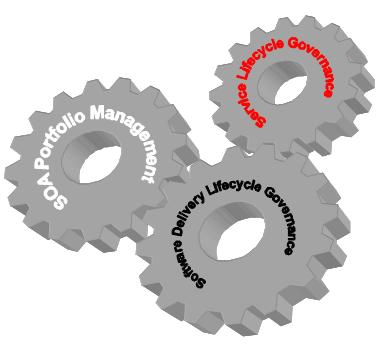
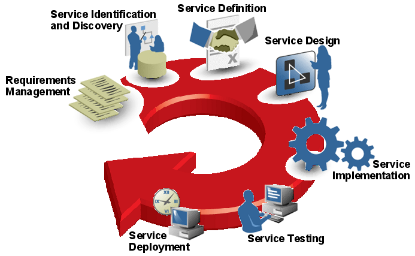
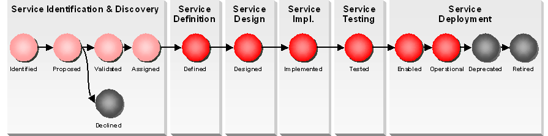
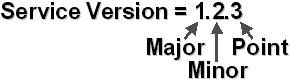
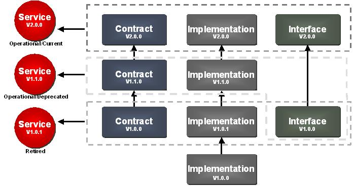
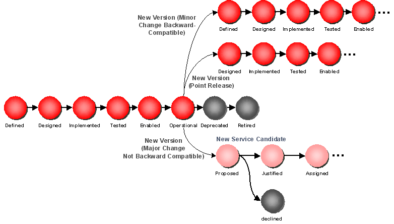
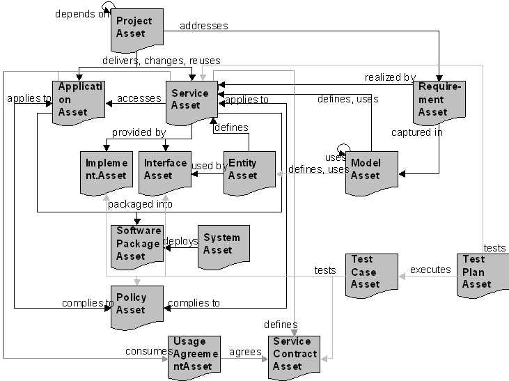
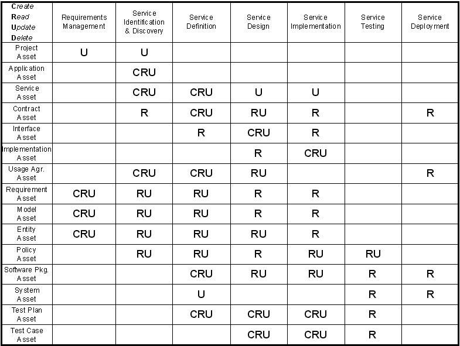

OUM |
Technique Overview |
||
Method Navigation |
Current Page Navigation |
||
|
|
||||||||
The purpose of this technique is to provide guidance for SOA practitioners to understand the service lifecycle used by OUM and the assets needed during the lifecycle.
It is expected that the reader is already confident with the content of the Service Architecture technique. This technique can be used as starting point to adopt the service lifecycle to the needs of a specific enterprise. Any engineer implementing services following OUM should be familiar with the content of this document.
The service lifecycle tracks the service from inception through retirement, and includes the service’s evolution through multiple service versions. Therefore, the lifecycle can be expressed as a list of stages that should be passed.
Throughout the lifecycle of a service a set of assets are created, changed and used. The service may be reused by several consumers. The dependencies and associated impacts of changes will become more complex as SOA maturity increases. Therefore, there is a need to manage all these dependencies centrally. An enterprise repository should be used to inventory all assets needed in the service lifecycle, and to facilitate impact analysis based on inter-dependency. Impact analysis can also help with release planning and service enhancement prioritization.

As services are created and reused in projects, the Software Delivery Lifecycle (SDLC) must be coordinated with the service lifecycle. OUM already covers the service lifecycle as documented here. If the service lifecycle gets tailored due to specific enterprise needs, the impact on the OUM method should be analyzed, and any changes must be documented clearly for the delivery teams.
If applying the service lifecycle to a customer SDLC other than OUM, the technique guides linked to the service stages can be used to understand the lifecycle related requirements and to identify the right linkage points in the delivery method.
An enterprise performing SOA should have a Service Portfolio Management that includes the definition of the service lifecycle and a management of all related assets with the help of a tool. Therefore, the Service Portfolio or IT Portfolio Management Guide of the customer should be reviewed, if they include or link to guidelines on service lifecycle and asset management. Sometimes these topics are covered as part of the SOA Reference Architecture document. If that is not the case, a set of workshops should be conducted with the enterprise architects or methodologists including all stakeholders to agree on a service lifecycle and if necessary, to tailor the SDLC processes accordingly.
Service Lifecycle - The result of this technique is a collateral that defines the Service Lifecycle that is appropriate for the customer situation, including the Service Lifecycle definition itself, but also including a Service Versioning Strategy and SOA Asset Definitions for all assets used throughout the Service Lifecycle.
This collateral may reuse most of the sections in this techniques document, naturally adjusted according to the customer situation.
No. |
Step | Component | Component Description |
|---|---|---|---|
1 |
Define the Service Lifecycle. | Service Lifecycle Definition | The Service Lifecycle Definition contains a description of all the stages a service will go through, and in which order. Often this is visualized using a drawing of all the states, followed with a description. |
2 |
Determine the Service Versioning Strategy. | Service Versioning Strategy | The Service Versioning Strategy describes the strategy for when a version should get a new version, and in particular, when it should be a major release, or point release, including the component that the service depend on. |
3 |
Define the assets belonging to the Service Lifecycle. | SOA Asset Definitions | The SOA Asset Definitions describe all other assets that are related to the service lifecycle. |
The service lifecycle can vary with the different enterprises and should be compliant with the service engineering approach. The service lifecycle described below, is the definition as used by OUM.
The lifecycle is described based on two views. The first view is the set of stages a service goes through and hence provides the linkage points into the OUM SDLC, and the second is a more detailed view consisting of the states that the service transitions through.
The service lifecycle stages are depicted below:

A service begins its “life” as a Service Candidate. The Service Candidate is either identified during Envision, or in Implement, during the Inception and the Elaboration phase.
During both Inception and Elaboration, you start with the Requirements gathering and proceed through Service Identification and Discovery. At the end of Elaboration, release planning is performed. In the event that an existing service should be extended or “Evolved”, Elaboration begins at the tail end of the lifecycle.
Service Definition is executed during Elaboration, defining the contract of the service candidate. Service Design starts in Elaboration by designing the service and ends in Construction with the implementation of the service interface.
In Construction, Service Implementation is completed, or a new version of the same service is realized. This is concluded in the Construction phase with the service artifacts in a state deemed ready for deployment into the operational environment.
Service Testing starts in Elaboration taking the contract defined to develop the test strategy and plan. In Construction the service gets tested.
Service Management begins during Construction where the packaging of services into deployment units needs to be done. With Transition the new service or new service version is deployed and enabled e.g. to be used in field tests until it gets operational, i.e. ready to be consumed in Production. As soon as a new version of the service is initiated in Elaboration, the service should be deprecated to avoid new consumers to be added to the service. But a service can only be retired, if no consumer uses it anymore.
The second view of the service lifecycle depicts the various states the service travels through. This view is depicted below:

A service begins as a service candidate, which is initially proposed when it is identified. It is then either justified for realization, or in the event of a failed justification, the requirements linked to the service candidate become the responsibility of the project, rather than a shared service delivery. Justified service candidates are further assigned to a delivery team for realization, and through that transforms from a candidate to a reusable service.
A service candidate may result in the definition of more than one service. Service boundaries are determined during service definition, which is where the service candidate transitions from service candidate to service. Once service definition has completed, the service is in the “Defined” state. It then goes through service design, implementation and test where it passes through corresponding states. Then the service can be enabled for consumption by deploying it into production and enabling it on the Service Bus. As soon as the service is available for consumption in production, it enters the “Operational” state. A service may eventually become deprecated as preparation to the retirement when it is no longer relevant within the SOA.
A combined view of the service lifecycle including both stages and states is included below:

Service versioning is an important part of SOA as it is the key enabler for service evolution.
Service versioning must be considered early on in an SOA. The versioning strategy is an enabler for agility and should define the baseline for managing the dependencies of services to its consumers.
The versioning strategy adopted does not need to be overly complicated, but there are a few things that should be examined when determining the strategy. At the very minimum, the strategy should be as consistent as possible. It is acceptable to have separate versioning strategies utilized for services of varying scope (versioning for multi-enterprise services may need to be different than internal services for instance). Consider the following when adopting a service versioning strategy:
Infrastructure - The capabilities of the service infrastructure an enterprise has in place limits the strategy that can be adopted. For instance, if a data transformation capable service bus is available, then a versioning strategy could incorporate automatic migration of consumers of former interface versions.
Service Interface - What impacts from versioning can be incorporated consistently into the service interface?
Impact - Assess the impact this versioning strategy will have on new and existing consumers. How will it affect QoS, security, etc?
From a best practices perspective a version of a service consists of a numeric 3-tuple (major, minor, and point).

The appropriate element of the tuple is incremented based on the type of change that will be applied to the service.
A major change to the service would result in the first element of the tuple to be incremented. These types of changes are not backwards compatible and will therefore require service consumers to be modified before being able to utilize the new version of the service. If services tend to go through a large number of major revisions, it is an indication that there are areas for improvement in the adopted service engineering procedures, particularly around the area of Service Identification and Discovery. The deployment of a major release of a service typically requires the previous version to be co-deployed. The previous version is considered to be deprecated in order to allow service consumers to be upgraded to the newest version of the service.
A minor change to the service would result in the second element of the tuple to be incremented. These types of changes are backwards compatible and do not require dependant service consumers to be updated to utilize the new service version. The deployment of a minor release to a service results in the immediate retirement of the previous version of the service.
A point release of a service represents the least significant types of changes for a service. Changes such as defect fixes, where no new functionality is added to the service, are classified as point releases. Like the minor release, the point release is backwards compatible and upon deployment the previous version of the service should be immediately retired.
The components of a service (contract, interface and implementation) may evolve independently. But the revision tuple must be synchronized across the components and with the resulting service itself.
As best practice on each major release, all components are incremented to the same tuple with the same release number and minor and point numbers set to 0. Each change to any of the components will increase the corresponding tuple number of the service. The component changed will then inherit the tuple of the service. This ensures consistency in the increment of the service version number while at the same time the versions of the components will indicate the scope of change applied to the version.

From the figure above, the current version of the service is 2.0.0. There can be only one “current’ version of a service. The current version is the only one that may be discovered for reuse in emerging projects or services. However, there may be older versions of a service in an operational state, but these services are deprecated and will be retired once all consumers have taken the necessary action to upgrade to the latest version.
The degree or severity of the change that is proposed to a service version affects the lifecycle that the service must continue through in order to evolve.

From the figure above a service evolves from its operational state. The course it must follow depends on the type of change being proposed to the service. Regardless of the level of change, all former versions of a service should be deprecated as soon as the new service version has achieved the status “Defined”. This will help to ensure new consumers to always select the most recent version of a service, and will document to all existing consumers a need to migrate as soon as possible.
In the case of a point release, such as a defect fix, the new service version may be set to “Defined” state, as a point release should not effect the definition of the service. The change will then need to be designed, implemented and tested to finally bring it back into the operational state.
A minor release to the service requiring possibly the addition of a new feature, would require that the service begin with the definition phase and therefore receives the status “Assigned”. The changed requirements will then be reviewed in the definition stage to define the new scope of the service. The service then moves through a complete service delivery cycle until it gets back into operational state.
For major releases, the proposed service change must begin with service analysis as a proposed service candidate, which must be justified, and then scheduled for release, prior to entering into service delivery where the new version is eventually delivered into the operational environment.
Services are built having reuse in mind and therefore the number of consumers will increase over time. With each new consumer, additional dependencies are created that need to be managed. Synchronizing all dependencies in one release cycle will result in an inflexible SOA not delivering to the agility needs of the business. Therefore the management of the dependencies must allow for decoupled lifecycles, mainly achieved by hosting different service versions in parallel.
A service that supports parallel deployment of different versions, must allow for coexistence of different implementations to the service. In that case each version must be enabled on the service bus separately, applying different URLs. Typically this implies a naming convention supporting service versions on major and minor level. A point release should not be included in the naming convention to allow point releases to replace the former version.
The message routing of consumers to services can be handled on the Service Bus. Depending on the functionality offered by the Service Bus, there are different options to route a consumer message to the corresponding version of the service. Each service should decide upon one enabling strategy to be used for all versions.
Consumer Proxy - The Service Bus provides a different access point for each consumer. The Service Bus then decides to which version of the service the consumer messages will be routed. This allows applying consumer specific data transformations to route the message to a newer version than the consumer was originally designed for.
Version Proxy - For each service version, a new access point is provided by the Service Bus. This access point is used by all consumers designed for the specific service version. The access point can be routed to a newer version if the transformation logic needed can be applied generically to all consumers.
Service Proxy - For each service only one access point is provided by the Service Bus. Depending on the content of the message, the Service Bus dynamically selects the version of the service the message needs to be routed.
Services, which depend on other services or external systems that do not support parallel versions, will need to decouple the logical implementation of its own functionality from the technical access of dependent interfaces they use. If any of the interfaces enforces a change, the change needs to be applied to all versions of the service to decouple the consumers from the changes in the depending subsystems. In that case the access part is typically a shared component between all service versions, often resulting in the packaging of multiple versions into one deployment unit.
To avoid version sprawl a consumer migration strategy is needed. This will help to control and reduce the number of parallel service versions. The migration of a consumer is the process to link the consumer to the latest version of the service. This can be achieved in three different ways: automatic, controlled or enforced.
The strategy can be applied consistently to all consumers of a service or to a subset of consumers. A subset should be linked to a specific service version or to an enablement strategy to allow for rules to be implemented on the service bus.
In order to use an automatic migration, the interface and implementation of the target service must be backward compatible, i.e., no change is required on consumer side. Therefore, this strategy is automatically applied to any point releases of a service and the consumers of the former release. If selected for minor changes as well, the service must provide a transformation logic to be used on the Service Bus for all consumers with an automatic migration strategy.
This strategy typically requires the possibility of data transformation in the service bus.
For a controlled migration of a consumer group, the new service must be deployed and launched in parallel to any former version. This strategy can be applied to major and minor changes. It allows each consumer to migrate on a different timeline. In order to allow for retirement of former versions, a target timeframe will be announced. All consumers being part of this strategy will be informed to plan for migration within the given timeframe.
The controlled migration of the consumers needs to be monitored if this should lead in the retirement of former service versions. It might happen that the planned retirement date needs to be postponed due to consumers not having achieved migration in the given timeframe.
To force migration the process is similar to controlled migration, but the enablement of the new version will be synchronized with the deployment of all migrated consumers in one release. As a consequence the lifecycle of the service will be bound to the release plan of all consumers being part of this strategy.
This strategy must be applied to services that do not support for parallel deployment of different versions. In addition this strategy is typically used to ensure regulatory compliance.
If the enterprise has decided upon a policy to define a maximum number of parallel versions of the same service, each time a new version is created above that target number this strategy will be applied to all consumers of the oldest version automatically.
There is a large amount of information that should be managed along the service lifecycle. In order to provide the information in a way allowing for collaboration across projects the use of an Enterprise Repository is highly recommended. The primary focus of the enterprise repository is at design time providing a centralized holding area for a great deal of SOA related information that will be utilized at design time to construct additional services and applications. The repository also provides the primary means for service discovery. In many ways, the service repository can be utilized as the center point for service-oriented design.
OUM recommends the use of an enterprise repository for, but is not restricted to, Service Portfolio Management. This allows all projects to use the same information reference, and therefore ease service reuse cross projects and even lines of business.
During the service lifecycle stages, a set of assets are created that can be used in other stages, or even in other lifecycles as a means of communication.
An asset is a set of meta data that describe an object of interest in the overall service engineering approach and may be linked to physical files that represent an entity of the asset. All assets should be stored in the Enterprise Repository and links should be added to document relationships between the assets.

The figure above depicts the relationship of the assets that are used as part of service engineering in OUM.
Please refer to the IT Asset Management technique for a description of the meta models of the different asset types used along the service lifecycle.
The following CRUD matrix shows, when the assets are created, read, used or deleted. Be aware that this only covers the asset usage in the scope of a service lifecycle. The matrix may look different if for example application development or policy management would be in focus.

The project asset should have been created on project initiation already.
The project asset will be updated with additional relationships to requirements created or relevant for the project. The requirements can already exist if they are shared requirements.
For each application and service created, changed or used during a project, a relationship will be added to the applicable project asset. This will document the scope of development efforts and will be used for release planning.
All functionality not justified for being delivered by services need to be delivered as part of already existing applications or can be used to create a new application. At the same time the relationships between applications and services can be updated to document usage dependencies. If an application will need to consume a service, a new service usage agreement will be created and linked to the application.
The service asset will be created on Service Identification and Discovery. In that case, the creating project will be documented with a delivers relationship. At the same time already existing services can be discovered for reuse. Some of them might need to be changed, what should result in a new version of the asset to be created. If the service needs to be changed this will be documented with a changes relationship from the project asset, otherwise a uses relationship will be created. Which requirements, models, entities and policies are relevant for the service will be documented by according relationships.
When a service is defined, the contract of the service will be created. The service is linked to the contract with a defines relationship. Additional more fine grained services can be identified needed to deliver the service. In that case new service assets should be created. Again this will impact relationships to requirements, models, entities and policies. If the service depends on other services, then new service usage agreements will be created and linked with a consumes relationship. At this point in time the software package the service shall be packaged into will be selected or created. And the test plans for the service need to be created and linked to the service.
When a service is designed, the interface of the service will be created. The service will need to link to the interface with a provided by relationship.
When a service is implemented, the implementation of the service will be created. The service will need to link to the implementation with a provided by relationship.
Contracts describe the scope of a service and therefore will be used on Service Identification and Discovery to read and understand services already available in the portfolio.
A contract will be created when a new service is defined. If a service is changed with respect to its contract, a new version of the contract will be created. The service is linked to the contract with a relationship defines. All usage agreements created for the service will need to link to the contract with an agrees relationship.
The contract provides guidance on service design. Functional tests should be created that test the contract.
The contract will provide some guidance for service implementation as well.
Operations will need to read the contract for service deployment. Depending on the contract monitoring on service usage should be configured.
Interfaces document the operations provided and messages used in communication with a service. When service reuse leads in a change to a service, the service interface must be checked, if it will be impacted by the change
For all new services an interface will be created on service definition. It is possible to have two services with the same interface, e.g. separate services for different locations (countries). If the interface of an already existing service must be changed for reuse, a new version of the interface asset will need to be created. The service will link to the interface with the relationship provided by. Interfaces should be based on canonical data models that will be documented with used by relationships from the entity assets to the interface assets. As soon as the interface is created test cases should be created to test the interface.
On implementation, the interface needs to be used.
The implementation provides information on the technology used to implement the service. When the design of a service needs to be changed, this information should be reviewed to understand the impact of change to the implementation efforts.
On service implementation the implementation will be created. The service will link to the implementation with a provided by relationship. At the same time developer test cases should be created to test the implementation.
The usage agreement documents the scope and load a consumer will create against the service. When on service identification & discovery new services are identified, the corresponding consumer should be defined as well as linking it with a consumes relationship to a new service usage agreement. A new usage agreement will be created for each additional consumer, i.e., each reuse.
On service definition services can be decomposed into more fine grained services resulting in new services and new consumers. For each new consumer again a usage agreement needs to be created with a consumes relationship from the consumer and an agrees relationship to the contract of the service. This documents both parties, consumer and provider, have agreed upon the usage according to the terms of the contract and with the details of the usage agreement.
On Service Design, the details of the scope and load of usage needs to be clear, updating the usage agreements accordingly. The load gathered from all usage agreements against the same service will be used for capacity planning of the service. Therefore changes to the load information should be reviewed by the service provider to check the impact.
When the service gets deployed operations will need to configure service management according to the usage agreements of the service. The usage agreements document, which consumers need to get access to the service and document the load the consumer is allowed to produce. This may be monitored or controlled.
Requirements are created on requirements management. All requirements of a project will need to be linked with an addresses relationship from the project. The same requirement can be addressed by more than one project if it is shared, and the realization of the requirement is delivered by a service. Updates to a requirement will result in a new version of the requirement asset. Models are used to depict requirements what will be documented with a captured in relationship to the corresponding model.
On Service Identification and Discovery, requirements and models will be used to identify new services or to discover reuse of services. The relationship realized by documents which services realize the requirement. If the requirement is new to be realized by SOA, the requirement might need to be changed to be more generic for the enterprise.
When services are defined they can be decomposed into more fine grained services. This can impact the relationships from requirements changing the realized by relationship to another service.
Models are created on requirements management to depict requirements. This will be represented with a captured in relationship from the corresponding relationships. The analysis can result in new models being created or already existing models being changed. When a model needs to be changed a new version of the asset should be created.
On Service Identification and Discovery, models and requirements will be used to identify new services or to discover reuse of services. The relationship defines documents which services were identified new by a model. The relationship uses documents that the model reuses an already available service. In order to enable reuse, a model might need to be changed to integrate the service usage.
When services are defined they can be decomposed into more fine grained services. This can impact the models that might need to be updated for the decomposition.
Entities are created on requirements management analyzing the data needs of a project. The analysis can result in new entities being created or already existing entities being changed. When an entity needs to be changed a new version of the asset should be created. The model that leads to the creation of the entity will have a defines relationship to it. All other models will get a uses relationship.
On Service Identification and Discovery, entities will be used to identify new services or to discover reuse of services. The relationship defines documents which services were identified by entities. In order to enable reuse an entity might need to be changed.
When services are defined they can be decomposed into more fine grained services. This can impact the entities that might need to be updated for the decomposition.
On Service Design, the interface of a service is created. The interface will need to reuse entities to conform to a canonical message model. Each interface using the entity will be linked with a relationship used by. This information can be used to understand impact of changes to the canonical message model.
Policies are used to document any kind of compliance a service needs to fulfill. Policies are managed out of scope of the service lifecycle but will have impact on the services and its component. Therefore on service identification & discovery when a service is identified or changed all policies relevant for the service need to be linked with a relationship applies to.
On Service Definition, services may be changed or new services may be identified. In that case the policy assignment needs to be checked and updated accordingly.
On Service Design, the policies assigned to the service will provide guidance for the design.
On Service Implementation, the policies assigned to the service will provide guidance for the implementation. Some policies can be tested automatically. In that situation test cases should be created with a relationship tests.
When the service is tested it should be checked for compliance on all policies assigned. Each policy the service complies to will get another relationship from the service to the policy of type complies to. This will allow to check the level of compliance of a service. Those policies having a test case assigned can be tested automatically. Other policies have a need for a manual review of the service to proof compliance.
On Service Definition, the packaging of the service for deployment will be decided. This can result in a new software package to be created including the relationship packaged into from the service to the software package. If the service will be combined with other services or even with an application into an already existing software package, just a new packaged into relationship should be created.
If the software package contains more than just that one service this might have impact on service design. While designing a service decisions need to be made regarding the deployment of the service such as configuration options. This needs to be documented in the software package asset.
When the service gets implemented the service needs to be packaged into the software package as documented by the relationship. Depending on the implementation selected, additional information might need to be provided on how to deploy and configure the service within the package.
For Service Testing, the software package the service is packaged into must be deployed into the test environment. The deployment instructions will be documented in the asset.
For service deployment the software package the service is packaged into, needs to be deployed into the production environment. The deployment instructions will be documented in the asset.
A system asset can document an infrastructure used for service deployment. Management and creation of systems is not in scope for service lifecycle. On service definition the software package for the service will be defined and a target system needs to be selected. There can be several target systems for the different staging environments of the service. This will be documented with a relationship deploys from the system to the software package.
When a service needs to be tested the corresponding software package should be deployed to a system belonging to the test environment. The operator of the system will need to identify all software packages to be deployed and follow the deployment instructions of the packages.
A service can only reach the status operational if an operational system deploys the service. The operator of the system will need to identify all software packages to be deployed and follow the deployment instructions of the packages.
A test plan describes a flow of tests to be executed. When a service is defined, test plans to be used for integration testing and load and performance testing should be created or updated.
As soon as the service is designed, additional test plans may be created for regression testing, isolation testing and consumer migration testing.
When a service is implemented, a test plan for development tests should be created or updated and executed.
On Service Testing, the test plans will be used to configure and execute the various test scenarios.
A test case describes a single test testing a component or a policy of a service. Although test cases should always belong to a test plan they may be created as an asset without assigning the test case to a test plan right from the beginning. A test case can belong to several test plans documented with the relationship executes from the plan to the test case.
When a service has finished definition, the interface of the service is available. Therefore functional test cases can be created or updated and designed in parallel to the Service Design.
When a service is implemented the corresponding unit tests cases should be created or updated as well.
On Service Testing, the test cases will be executed according to the test plans.
There are no templates available to assist with this technique.
This technique is recommended for use in the following OUM tasks:
| Task | Usage |
|---|---|
| Use this technique for guidance on how version control should be set up for services and dependent components. | |
| Use this technique to understand the service lifecycle, and the related assets. | |
| Use this technique to understand the service lifecycle, and the related assets. | |
| Use this technique to understand how to determine the service lifecycle, and to identify related assets. | |
| Use this technique to understand the service lifecycle, and the related assets. | |
| Use this technique to understand the service lifecycle, and the related assets. | |
| Use this technique to understand where this task fit in the overall service lifecycle. | |
| Use this technique to understand the service lifecycle, and where this task fits into that cycle. | |
| Use this technique to understand where this task fit in the overall service lifecycle. | |
| Use this technique to understand where this task fit in the overall service lifecycle for SOA service implementation. | |
| Use this technique to understand where service packaging fits into the overall service lifecycle. | |
| Use this technique to understand where service testing fits into the overall service lifecycle. | |
| Use this technique to understand where service testing fits into the overall service lifecycle. | |
| Use this technique to understand where service testing fits into the overall service lifecycle. | |
| Use this technique to understand where service testing fits into the overall service lifecycle. | |
| Use this technique to understand where service testing fits into the overall service lifecycle. | |
| Use this technique to understand where service testing fits into the overall service lifecycle. | |
| Use this technique to understand where service testing fits into the overall service lifecycle. | |
| Use this technique to understand where service deployment fits into the overall service lifecycle. | |
| Use this technique to understand where service deployment fits into the overall service lifecycle. |
Use the following criteria to check the quality of this technique:
Has a versioning strategy been described for services?
Is the versioning strategy consistent, that it as a minimum has the same versioning strategy for services of the same or similar scope?
Services are built having reuse in mind and therefore the number of consumers will increase over time. With each new consumer, additional dependencies are created that need to be managed. Synchronizing all dependencies in one release cycle will result in an inflexible SOA not delivering to the agility needs of the business.
Does the management of the dependencies (to consumers) allow for decoupled lifecycles, mainly achieved by hosting different service versions in parallel?
For migration of consumers to the latest version of a service, is there a consumer migration strategy?
Is an Enterprise Repository in use/chosen to manage the amount of information along the service lifecycle?

Copyright © 2006, 2016, Oracle and/or its affiliates. All rights reserved.